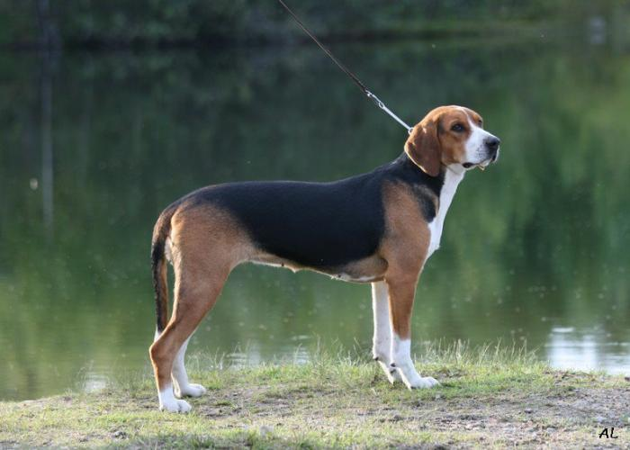
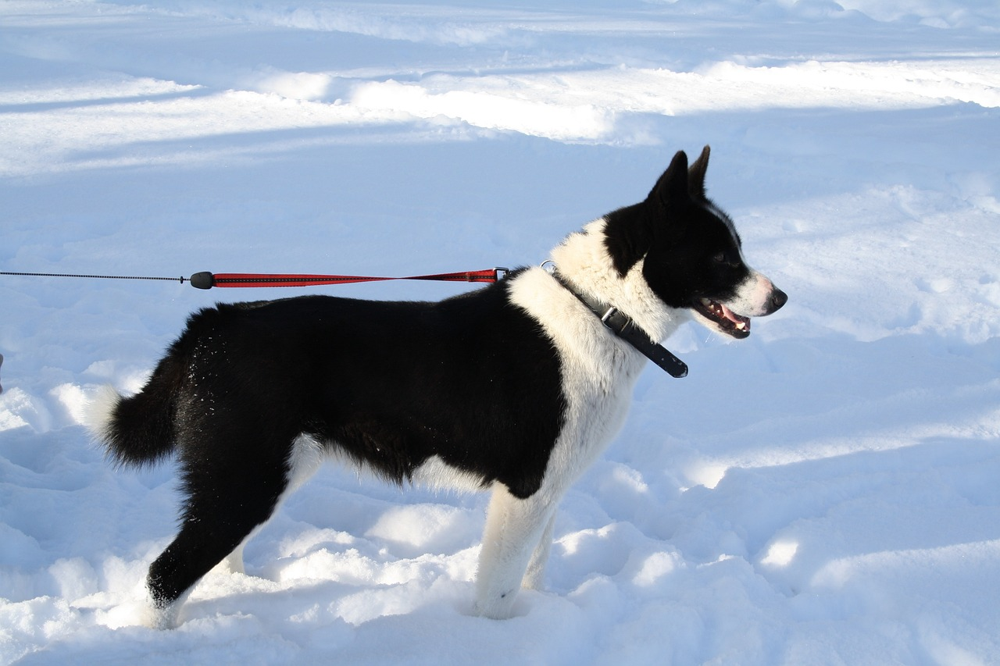

Suomenajokoira

Suomenajokoira on suomalainen koirarotu, jota käytetään pääasiassa jäniksen ja ketun metsästykseen.
Maaseudulla yleinen suomenajokoira on yksi Suomen yleisimmistä koiraroduista, mutta väen muuttaessa taajamiin ja metsästysmahdollisuuksien kavetessa sen kanta on laskusuunnassa.
Vuonna 2022 se oli Suomen kahdeksanneksi eniten rekisteröity rotu, kun 50 vuotta aiemmin, vuonna 1972, se oli vielä rekisteröintitilaston ykkönen.
Rotu on ihmisystävällinen, rauhallinen ja tarmokas.
Vihaisuutta pidetään virheenä, ja sitä ei juuri esiinny.
Rodulla on hyvin voimakas metsästysvietti, ja koira saattaa lähteä omin päin metsälle.
Suomenajokoira on myös pääasiassa ystävällinen lapsille ja muille koirille.
Ajokoirat ovat yleensä persoja ruualle, mutta monesti hajut ja nenänkäyttö vie koulutuksesta ajatukset muualle.
Suomenajokoira
Karjalankarhukoira

Karjalankarhukoira on pääasiassa hirven ja karhun metsästykseen käytettävä suomalainen pystykorvarotu.
Rodun kantakoirat ovat kotoisin Karjalasta, jossa niitä käytettiin erilaisten riistaeläinten metsästykseen.
Karjalankarhukoira on Suomessa yleinen, ja vuonna 2020 se oli 12. suosituin koirarotu.
Karjalankarhukoira on hyvin rohkea ja peräänantamaton koira.
Se tunnetaan sitkeänä, sisukkaana, valppaana, urheana ja omalla tavallaan myös hyvin älykkäänä ja oppivana koirana.
Se on itsevarma ja saattaa käyttäytyä aggressiivisesti toisia koiria kohtaan.
Karjalankarhukoira